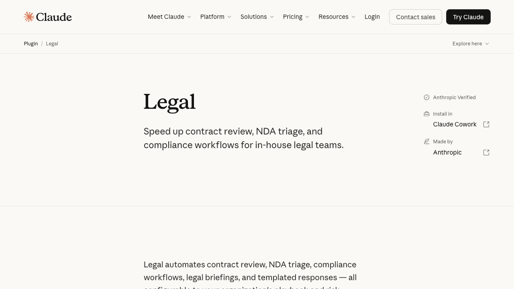
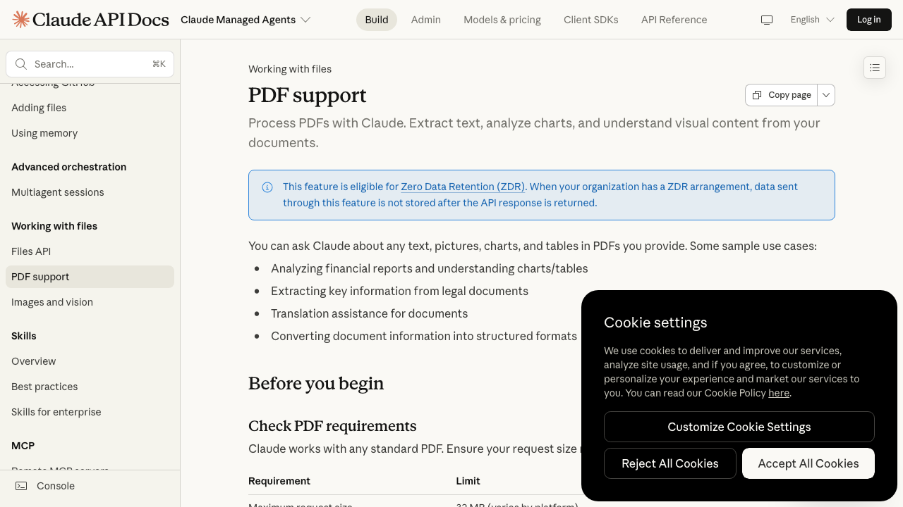
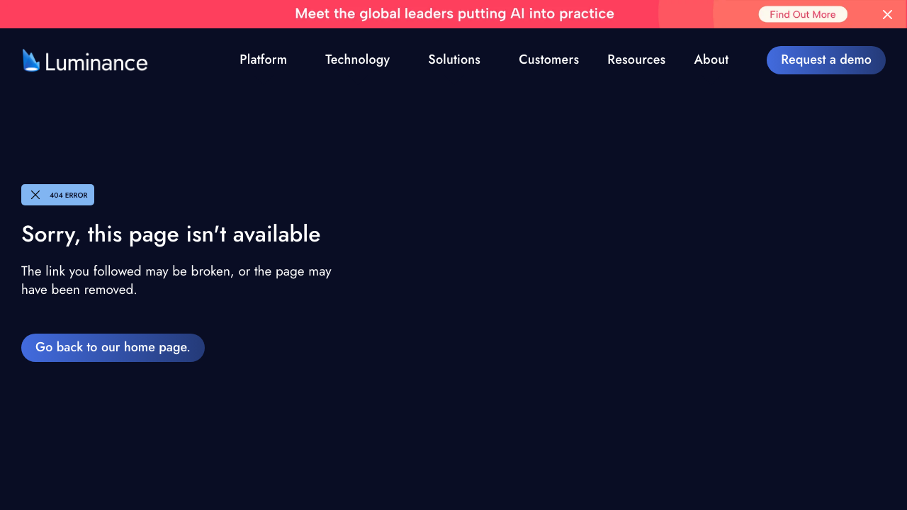
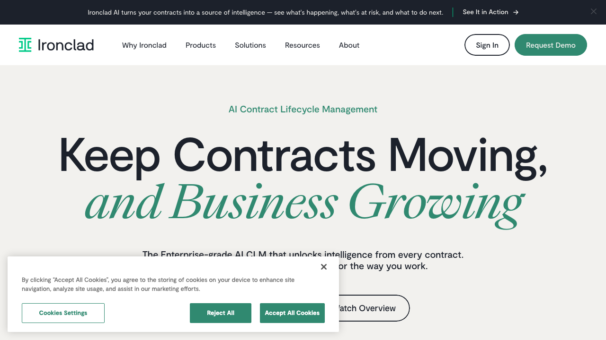
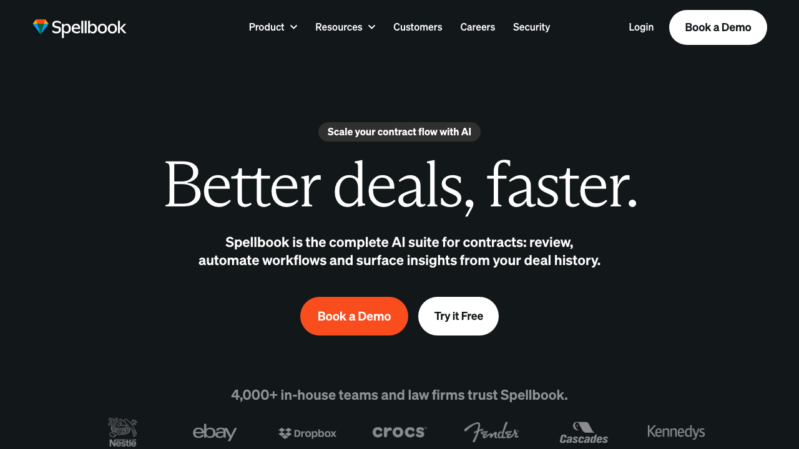

Un tutoriel étape par étape. À la fin, tu déposes un contrat PDF dans un dossier, et tu reçois en deux minutes une fiche d'analyse qui liste les 12 clauses critiques, cite les passages problématiques, et te donne un score de risque global. Compte 60 minutes de setup et environ 20 € par mois.
inbox/. L'agent le lit, le scanne pour 12 clauses critiques, et produit une fiche d'analyse dans analyses/ en moins de deux minutes.Si certains termes te perdent (Claude Code, terminal, agent, MCP, skill…), commence d'abord par le guide débutant et garde le lexique ouvert dans un autre onglet. Tu reviendras ici avec les bases.
Cet agent ne remplace pas un avocat. C'est un outil de premier filtrage qui t'aide à repérer les points à creuser avant de payer une vraie consultation juridique.
Si tu signes un contrat engageant plus de 10 000 € ou de la propriété intellectuelle sensible, fais toujours valider par un avocat. L'agent te fera gagner du temps de préparation et ne loupera pas les pièges classiques. Il n'a pas la responsabilité professionnelle d'un juriste.
Le sujet relève du YMYL (Your Money Your Life) : décisions à fort impact financier ou juridique. Les analyses produites ici sont indicatives, jamais des conseils juridiques personnalisés. Pour tout contrat à enjeu (associé, M&A, levée, IP, sortie), un avocat reste obligatoire — l'agent te prépare la conversation, il ne la remplace pas.
Chaque fiche produite par l'agent contiendra un disclaimer explicite. Garde ce disclaimer, il te protège. Aucune décision finale ne doit reposer uniquement sur l'agent.


Si ce n'est pas déjà fait, ouvre Terminal et colle :
curl -fsSL https://claude.ai/install.sh | bashLance ensuite :
claude
Connecte-toi avec ton compte Claude.ai. Tape /exit pour sortir.
Dans Terminal, crée la structure de dossiers :
mkdir -p ~/contrats-agent/inbox
mkdir -p ~/contrats-agent/analyses
mkdir -p ~/contrats-agent/archives
mkdir -p ~/contrats-agent/.claude/commands
cd ~/contrats-agentinbox/ reçoit les nouveaux contrats à analyseranalyses/ reçoit les fiches d'analyse produites par l'agentarchives/ stocke les contrats déjà traités
Pour que l'agent puisse lire les PDFs que tu déposes dans inbox/, tu dois ajouter un MCP filesystem (un petit pont qui donne à Claude un accès contrôlé à un dossier précis de ton Mac, voir aussi la spec MCP). Colle cette commande :
claude mcp add filesystem npx @modelcontextprotocol/server-filesystem ~/contrats-agent
Cette commande donne à Claude Code l'autorisation de lire et écrire dans ~/contrats-agent, et uniquement là. L'agent ne peut pas accéder au reste de ton Mac.
Pour vérifier que le MCP est actif, lance Claude Code et tape /mcp. Tu dois voir filesystem dans la liste.
C'est la partie la plus importante. Le prompt système (les instructions de fond que l'agent garde en tête à chaque échange) cadre tout le reste. Crée un fichier CLAUDE.md à la racine de ~/contrats-agent avec ce contenu exact :
# Agent Lecteur de Contrats
## Rôle
Tu es un analyste junior de contrats. Tu assistes un professionnel
dans la revue d'un contrat avant signature. Tu ne remplaces jamais
un avocat : tu fais un premier filtrage méthodique.
## Contexte
- Contrats reçus en PDF dans `inbox/`
- Analyses écrites en Markdown dans `analyses/` (même nom que le PDF)
- Contrats traités déplacés dans `archives/`
- Droit applicable par défaut : français
- Si le contrat est en anglais, signale-le en tête de fiche
## Méthode (obligatoire)
1. Lire le contrat en entier (si plus de 20 pages, itérer par plage)
2. Identifier les parties, l'objet, la durée, les montants
3. Scanner les 12 clauses critiques (liste ci-dessous)
4. Pour chaque clause trouvée : citer le passage exact + numéro de page + niveau (ROUGE, ORANGE, JAUNE ou VERT)
5. Repérer les clauses absentes qui devraient exister (exemple : clause RGPD dans un contrat traitant des données personnelles)
6. Produire la fiche selon le format imposé ci-dessous
7. Déplacer le PDF traité vers `archives/`
## Les 12 clauses critiques à scanner
1. Responsabilité et plafond
2. Auto-renouvellement tacite
3. Résiliation (préavis, pénalités)
4. Propriété intellectuelle
5. Non-concurrence et exclusivité
6. Confidentialité
7. Paiement (délais, pénalités)
8. Modification unilatérale
9. Juridiction et droit applicable
10. SLA et garanties
11. RGPD et sous-traitance
12. Force majeure
## Limites
- Jamais de conseil juridique définitif
- Toujours citer le passage exact + numéro de page
- Si ambigu, dire « à faire confirmer par un avocat »
- Ne pas inventer de jurisprudence ni de numéros d'articles
- Si le PDF est illisible, demander une meilleure version
## Format de sortie
# Fiche d'analyse — [nom du PDF]
**Date d'analyse** : YYYY-MM-DD | **Pages** : X | **Score global** : 🔴/🟠/🟡/🟢 X/10
## Résumé
- Parties : ...
- Objet : ...
- Montant : ...
- Signature prévue : ...
## Alertes critiques (🔴 à négocier avant signature)
[Liste numérotée avec citation + page + niveau]
## Alertes orange (🟠 à clarifier)
## Points jaunes (🟡)
## Clauses absentes à demander
[Ex : clause RGPD manquante, force majeure absente]
## Recommandation
[Verdict clair]
---
⚠️ Analyse générée par une IA à titre informatif uniquement.
Elle ne constitue pas un conseil juridique. Pour tout contrat engageant
plus de 10 000 €, consultez un avocat.
Crée le fichier .claude/commands/analyser.md — la commande slash (un raccourci personnalisé du type /ma-commande) — avec :
---
description: Analyser un contrat PDF
arguments:
- name: fichier
description: Nom du PDF dans inbox/
---
Lance l'analyse du contrat `inbox/$fichier`.
Suis la méthode définie dans CLAUDE.md :
1. Lis le PDF en entier.
2. Scanne les 12 clauses critiques.
3. Produis la fiche au format imposé.
4. Écris la fiche dans `analyses/$fichier.md`.
5. Déplace le PDF de `inbox/` vers `archives/`.
Ne pose aucune question. Exécute, puis affiche un résumé.
Tu peux maintenant lancer l'analyse d'un contrat en tapant /analyser mon-contrat.pdf.
Télécharge un contrat type pour tester. Si tu n'en as pas sous la main, récupère un NDA template public sur lawinsider.com et sauvegarde-le dans inbox/nda-test.pdf.
Dans Terminal, lance :
cd ~/contrats-agent
claudePuis :
/analyser nda-test.pdf
L'agent lit le PDF (trente secondes à deux minutes selon la longueur), produit la fiche dans analyses/nda-test.pdf.md et déplace le PDF dans archives/.
Ce que tu dois obtenir dans la fiche :
# Fiche d'analyse — nda-test.pdf
**Date** : 2026-04-20 | **Pages** : 5 | **Score global** : 🟠 7/10
## Résumé
- Parties : Disclosing Party (Client) ↔ Receiving Party (toi)
- Objet : Protection des informations confidentielles
- Durée : 3 ans post-contractuelle
## Alertes critiques (🔴)
1. **Art. 4 — Confidentialité perpétuelle** (p.2)
> « The confidentiality obligations shall survive indefinitely. »
Durée trop longue, non-conforme à l'usage en France.
## Alertes orange (🟠)
2. **Art. 6 — Juridiction** (p.4)
> « This Agreement shall be governed by the laws of Delaware. »
Forum étranger, coûteux en cas de litige.
## Clauses absentes à demander
- Aucune clause RGPD alors que des données personnelles peuvent être partagées.
## Recommandation
🟠 À clarifier avant signature. Demander la limitation de la durée
de confidentialité à 5 ans et la mention du droit français.
Pour que l'agent analyse automatiquement tout PDF déposé dans inbox/, on utilise un hook Claude Code (un déclencheur automatique qui lance une commande quand un événement précis se produit) qui écoute les changements de fichiers.
Crée le fichier .claude/settings.json avec :
{
"hooks": {
"FileChanged": [
{
"matcher": "inbox/*.pdf",
"command": "claude -p '/analyser $(basename $CLAUDE_CHANGED_FILE)' --output-format json >> analyses/log.jsonl"
}
]
}
}
Désormais, chaque fois que tu glisses un PDF dans inbox/ (depuis le Finder par exemple), l'agent s'auto-déclenche. Tu retrouves la fiche d'analyse dans analyses/ en quelques minutes.
Les contrats contiennent des données sensibles. Avant de les balancer à l'API Claude, vérifie ces trois points.
Pour les contrats très sensibles, un script Python de 20 lignes remplace les noms des parties, les numéros SIRET, les IBAN par des placeholders (des marqueurs neutres type [CLIENT_1] qui remplacent les vraies valeurs) avant envoi à l'agent. Tu récupères ensuite la fiche et tu remplaces les placeholders côté humain. Ce n'est pas nécessaire pour des NDA (accord de confidentialité, standard B2B) standards.
Si tu analyses les contrats de tes clients pour leur compte, tu deviens sous-traitant au sens de l'article 28 du RGPD. Tu dois signer un contrat de sous-traitance avec tes clients qui encadre cet usage. Voir aussi les recommandations CNIL sur l'IA et le RGPD pour le cadre complet.
Si le PDF est un scan flou ou une photo prise au téléphone, Claude peut halluciner (terme technique : générer du contenu plausible mais faux, ici inventer des clauses qui n'existent pas). Règle simple : si la fiche contient des clauses sans numéro de page ou dont la citation semble bizarre, demande une version texte du contrat ou refais scanner en bonne qualité.
Claude Code lit jusqu'à 20 pages par appel (à cause de la context window — la quantité maximale de texte que le modèle peut lire d'un coup). Sur un contrat de 100 pages, tu dois itérer par plage. Le plus simple : splitter le PDF en sections (contrat principal, annexes techniques, annexes tarifaires) et lancer /analyser sur chaque section.
L'agent est fiable pour repérer les clauses classiques. Il peut rater les subtilités spécifiques à ton secteur. Relis toujours la fiche, ouvre le PDF côté humain sur les clauses signalées, et consulte un avocat pour tout engagement significatif.
Scénario plausible : consultant indépendant qui signe 4 contrats par mois, chacun d'environ 20 pages.



| Avant l'agent | Après l'agent | |
|---|---|---|
| Temps par contrat | 1 h 30 de lecture attentive | 2 min agent + 20 min revue humaine |
| Total mensuel (4 contrats) | 6 h | 1 h 30 |
| Temps gagné | — | 4 h 30 par mois |
| Équivalent financier (100 €/h) | — | 450 € par mois |
| Coût mensuel API | — | ~1,5 $ |
| Coût mensuel Claude Pro | — | 20 € |
Le calcul bascule dès le deuxième contrat du mois.
Si tu traites principalement des contrats freelance, ajoute ce focus au prompt système :
Focus spécifique freelance :
- TJM ou forfait clairement défini ?
- Propriété intellectuelle des livrables (background IP protégé ?)
- Clause d'exclusivité abusive (hors secteur du client)
- Délai de paiement (loi LME : 60 jours maximum en France)
- Non-concurrence avec contrepartie financière (sinon inopposable)Si tu traites des contrats SaaS, focus :
Focus spécifique SaaS (logiciel en ligne par abonnement) :
- SLA chiffré (Service Level Agreement, engagement de qualité : uptime %, temps de réponse support)
- Stockage données (UE ou US ? sous-traitants listés ?)
- Réversibilité : format export, délai, coût après résiliation
- DPA annexé (Data Processing Agreement, art. 28 RGPD)
- Limitation de responsabilité (cap = X mois d'abonnement)Si tu traites des baux commerciaux :
Focus spécifique bail commercial (France) :
- Durée : 3/6/9 ou déplafonné ?
- Charges : taxe foncière à la charge de qui ?
- Indexation des loyers : indice ILC ou ILAT ?
- Destination des lieux (activité autorisée)
- Clause résolutoire (délai de grâce ?)Si tu as installé l'agent, trois questions pour calibrer la prochaine version du tutoriel :
Réponds à cet email avec ta situation. Je lis tout, je réponds.
Je peux me tromper. Cet agent évolue avec les versions de Claude Code et les capacités PDF du modèle. Si une commande ne fonctionne plus, écris-moi.
Tu veux d'autres tutos d'agents Claude Code ? Le tuto agent qui trie ta boîte Gmail (même mécanique, données moins sensibles), l'Hermes Agent pas à pas (multi-outils plus avancé) et le guide général sur les agents IA pour le cadre de réflexion.
Pas obligatoirement. Pour des contrats freelance ou SaaS standards, l'API Anthropic ou Claude Pro suffisent (pas d'entraînement par défaut). Pour des dossiers M&A, contrats clients d'un cabinet d'avocats ou contenus très sensibles, il faut Claude for Work / Enterprise avec ZDR, ou un modèle en local (Mistral 7B via Ollama).
Le ZDR (Zero Data Retention) garantit qu'Anthropic ne stocke aucune donnée envoyée après traitement — pas même 30 jours pour la conformité. Le DPA (Data Processing Agreement) est le contrat de sous-traitance au sens RGPD : il encadre les obligations d'Anthropic. DPA disponible en Pro / Team / Enterprise sur demande, ZDR inclus en Enterprise.
Confortablement jusqu'à 20 pages dans une seule passe (limite du context window pour rester précis). Au-delà, jusqu'à 100 pages en découpant en plusieurs passes par section (préambule, prix, durée, clauses techniques, annexes). Au-dessus de 100 pages, mieux vaut un outil dédié type Luminance ou Spellbook, ou faire de la pré-analyse résumée avant l'analyse globale.
Les hooks Claude Code se définissent dans .claude/settings.json avec une structure { event, matcher, command }. Pour cet agent on utilise un hook qui déclenche /analyser quand un PDF est ajouté dans inbox/. Le matcher accepte des patterns glob ; les events possibles : PreToolUse, PostToolUse, UserPromptSubmit, Stop.
Non, et l'agent ne le prétend pas. Il fait gagner 80 % du temps de pré-lecture en sortant les 12 clauses critiques, le score de risque et les zones à creuser. Pour signer des contrats à fort enjeu (associé, M&A, levée, IP, sortie), un avocat reste obligatoire — l'agent te prépare la conversation, il ne la remplace pas. Cas YMYL (santé, finance, droit) = filet humain non négociable.
Non, ce tutoriel reste en mode lecture seule : analyse + fiche + score de risque. Pour générer des contre-propositions, il faut un autre prompt système (rédaction) et croiser plusieurs templates de référence (lawinsider.com). Risque sinon : l'agent invente une formulation qui semble juste mais ouvre une faille. Mieux vaut séparer analyse et rédaction.
Le support natif Claude couvre les PDF (depuis fin 2024). Pour du Word, deux options : convertir le .docx en PDF avant de le glisser dans inbox/, ou ajouter un MCP qui sait lire le .docx (par exemple un MCP unstructured-io ou un script pandoc docx → md en pré-traitement). Le PDF reste le format le plus fiable pour préserver la mise en page contractuelle.
Tu deviens sous-traitant au sens de l'article 28 du RGPD vis-à-vis de tes clients. Tu dois signer un contrat de sous-traitance avec eux qui mentionne explicitement l'usage du LLM Anthropic, les garanties de confidentialité, la durée de conservation, le lieu de traitement. Côté Anthropic, active le DPA et idéalement le ZDR. Voir aussi les recommandations CNIL sur l'IA et le RGPD.
Compte 20 € pour Claude Pro (interface + Claude Code en abonnement) + ~ 1,5 $/mois d'API Anthropic pour 4 contrats analysés/mois en complément. Soit ~21,5 €/mois, contre 99 $/mois pour Spellbook ou plusieurs milliers d'euros pour Luminance / Ironclad. Prix vérifiable sur la grille officielle Anthropic.
Spellbook (99 $/mois) cible les avocats avec un add-in Word pour rédiger et négocier dans le flux. Luminance et Ironclad sont des plateformes CLM enterprise (plusieurs milliers d'euros/mois) qui couvrent tout le cycle de vie contractuel, multi-utilisateurs, audit trail, intégrations CRM. L'agent maison cible le freelance / entrepreneur indépendant : 21 €/mois, prompt sous ton contrôle, pas de seat fee — en échange, ni rédaction guidée, ni workflow équipe, ni e-signature intégrée.
Une info obsolète, un chiffre qui a bougé, une source périmée ? Écris-moi à sagnier.jeremy@gmail.com · je corrige en 48h max et je note la date de MAJ en haut de l'article. Les retours terrain valent mille fois les articles — je lis tout, je réponds.
Je partage mes tutoriels dans ma veille du vendredi. Sans pub, désinscription en un clic.